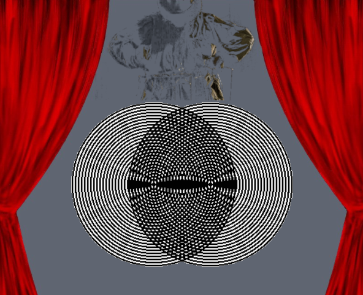

This application gives insight into what two tones could do when sounding at the same time. Difference-tones are part of combination tones and are also called "Tartini tones". They are the acoustic equivalent of moiré patterns.

What you see in the middle of this user-interface is an HTML-browser for viewing documentations of this application.
→ For good readability, you can magnify or reduce the text fonts on any text-area using keyboard keys "Ctr +" and "Ctrl -", or the right-click context-menu.
→ In the top toolbar you have a clickable list of chapters of the currently displayed page.
On both sides of this introduction you see buttons that will launch new user-interfaces representing aspects of tunings and difference-tones. On most of these windows you will find one or more "Help" buttons that provide information or user-guides about what you can do with those apps, but you can find these documentations also here below.
Intended audience of this project are musicians
that want to know more about what's sounding there deep under
when they bend two high notes on their electric guitar.
I also could imagine that small violin- or flute-ensembles
might want to try out performing a melody by playing its
difference-tone intervals instead of playing the melody notes directly.
For them, there is an "ABC Export" button to print interval notes on
some ABC-translator on the web.
I am looking forward to hear about the first "Difference-Tone Quartet" of the world!
The most important but also the most complex user-interface, it unites all components of this project, except frequency sliders. You can compose difference-tone intervals for a melody here, or you can click "Auto-Compose" and then adjust the intervals.
An algorithm will auto-compose difference-tone intervals for you. Enter a melody and click "Play". Be aware that the auto-compose algorithm is quite naive.
Activate "Hold" so that any clicked piano key will create a constant sound. Then click a piano key in some upper octave. You can change any parameter on top while the sound plays. To stop the sound, click "Hold" or one of the two piano keys once again.
This is not about difference-tones, this is about exploring 'unjustness' of tunings in context of triads (chords with three tones).
Sliders give more freedom than a piano keyboard. You get two frequency sliders (4 cent precision) for two tones of an interval and can watch and hear where their difference-tone slides to. Further you see the JustIntonation tuning calculation ratios. Optionally you can also watch the second and third difference-tone, although these hardly can be heard.
Sliders provide the frequencies of four different tones. This is for exploration of beatings in complex contexts.
Just-intonation is not as pure as its name suggests. For example, in a C-major scale (IONIAN mode), the minor chord on D (d-f-a) does not sound good. Find out which intervals and triads are 'unjust'.
This is just for getting familiar with the notes syntax. No difference-tones are involved here.
Click a piano key (in some upper octave) and see which difference-tone intervals could generate that tone. Click onto a list item and see which piano keys get activated by it. The difference-tone will have a red border.
The same as triad exploration, but with intervals.
You can configure different kinds of pianos with lots of properties. Also a MIDI piano is available, where you can test the sounds of all instruments supported by the Java synthesizer.
I have been a musician all my life and discovered difference-tones about 40 years ago. Since then I tried to use them creatively and integrate them into my music. As I am a software developer too, I started to experiment with sound wave generators last year. This application made me understand that difference-tones are more for electronic music, because instruments played by humans will hardly reach the precision needed to generate clear difference-tones. Moreover most instruments have so many overtones that their generated difference-tones would not be perceivable by the audience.
(CopyLeft) Fritz Ritzberger, Dec 2024 - Nov 2025